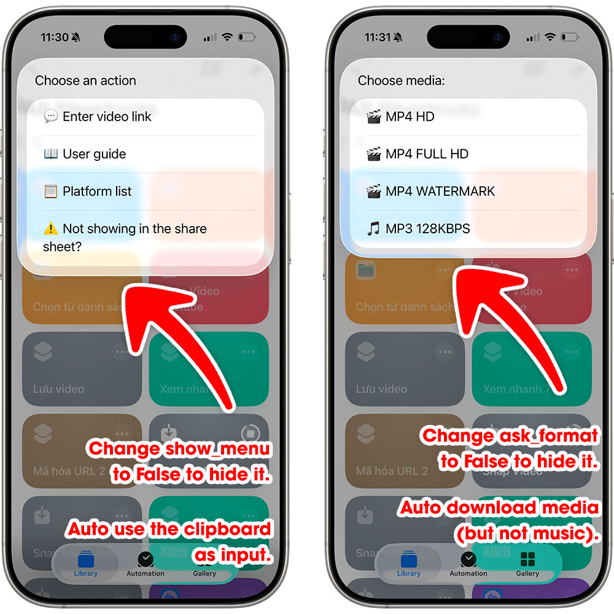
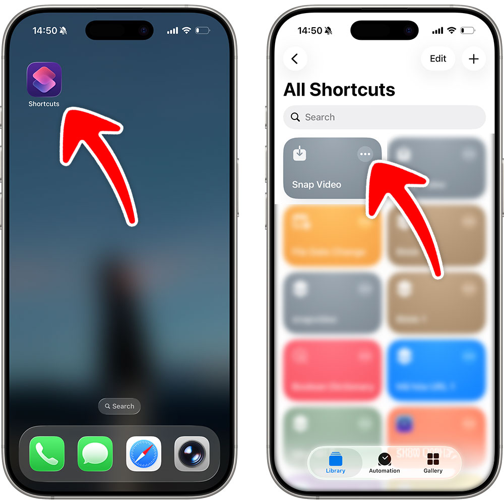
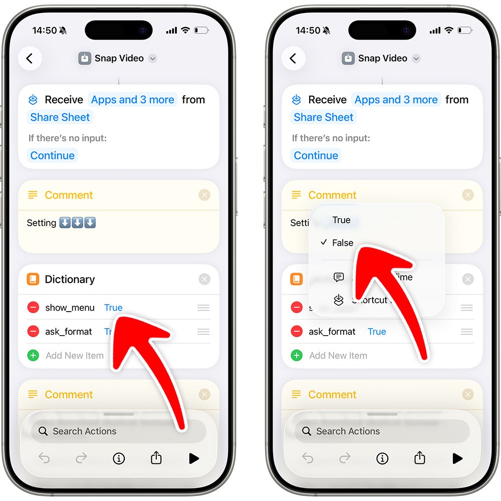

How to Hide the Menu


1
Step 1
Open the Shortcuts app => Tap to edit the Snap Video shortcut

2
Step 2
Set show_menu to False to hide the main menu. When downloading without input, the shortcut will automatically use the clipboard as input.
Set ask_format to False to hide the media selection menu. The shortcut will automatically choose media, excluding audio files.